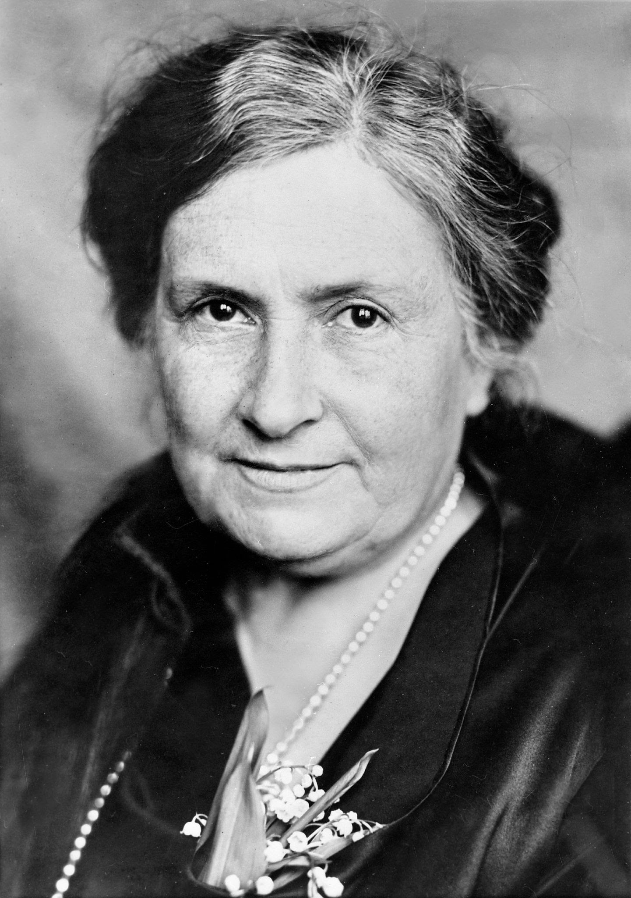

Dr. Maria Montessori

OBMC follows the vision of Maria Montessori, creating a learning environment that values discovery, independence, and holistic growth. By combining her timeless methods with modern educational practices, we guide students to become lifelong learners, critical thinkers, and responsible members of society.
Dr. Preciosa S. Soliven

Soliven, the visionary founder of OBMC, is dedicated to nurturing students’ minds and hearts. Her passion for values-driven education inspires excellence, character, and lifelong learning in every learner.
Architect Oscar Arellano

Oscar, co-founder of OBMC, is committed to shaping a learning environment where students thrive academically and grow in character. His vision of holistic education continues to guide the school’s mission and programs.